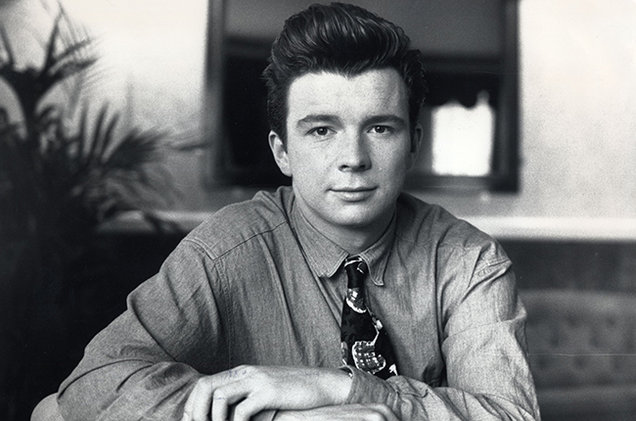

BIOGRAPHY
One of the music industry’s most distinctive voices, Rick Astley has left an indelible mark on pop-culture since his emergence into the limelight nearly three decades ago. With well over 40 million records sold, and an enviable back-catalogue of chart-topping hits, Astley remains one of the most successful solo artists to have emerged from these isles, holding the distinction of being the first male solo artist to see his first eight singles reach the UK Top Ten.
Just twenty one-years-old when he unleashed the iconic “Never Gonna Give You Up”; few debut singles have had the impact of Astley’s. Taking instant residence in the charts; the smash became the UK’s biggest selling single of 1987, going on to hit number one in 16 countries. The song became the centrepiece of debut album “Whenever You Need Somebody”, which sold an astonishing 15 million copies worldwide, cracking the US Top 10 in the process, and earning Astley a coveted Grammy nomination for ‘Best New Artist’.
The ensuing years saw Astley release a string of acclaimed hits, cementing the Lancashire-born artist’s reputation as one of the most exciting acts on the planet. Crossing genres at will, yet always retaining the soulful depth of delivery that made his name, Astley’s inimitable vocals propelled the likes of “Hold Me In Your Arms”; “She Wants To Dance With Me”; “Take Me To Your Heart”; “The Ones You Love”; “Cry For Help” and “Hopelessly” to the upper echelons of the charts across the globe.
Further evidence of his enduring popularity came with confirmation that his “Greatest Hits” compilation had gone gold in 2002, with the re-emergence of “Never Gonna Give You Up” as an internet phenomenon winning the hitmaker legions of new fans. In recent years, Astley has sold out venues on almost every continent, wowing audiences in Argentina, Japan, Australia, and beyond. His ever-passionate UK fanbase will have the opportunity to see Rick live in concert this spring, as he commences his latest tour at the end of March. It promises to be an exciting 2016 for the legend with a first new studio album in over a decade set for release later this year.
Astley’s new single “Keep Singing” is available to buy and download from April 7th with his highly anticipated new album due for release on June 10th, every track written, performed and produced by Astley himself.